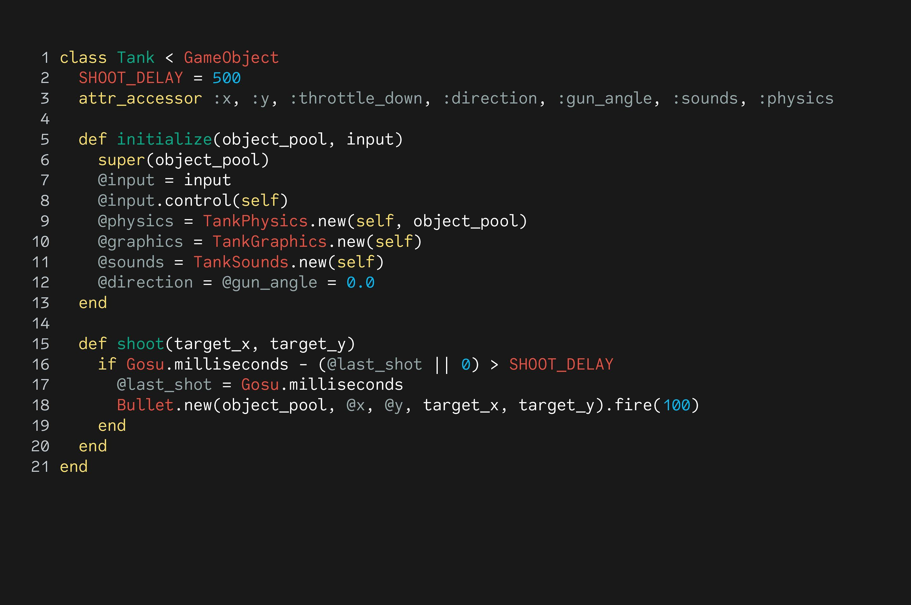

The computer was born not for entertainment or email but out of a need to solve a serious number-crunching crisis. By 1880, the U.S. population had grown so large that it took more than seven years to tabulate the U.S. Census results. The government sought a faster way to get the job done, giving rise to punch-card based computers that took up entire rooms.

A programming language: is a formal language comprising a set of instructions that produce various kinds of output. Programming languages are used in computer programming to implement algorithms.
Officially, the first programming language for a computer was Plankalkül, developed by Konrad Zuse for the Z3 between 1943 and 1945. However, it was not implemented until 1998.
| Language | History |
|---|---|
| Assembly | 1949 |
| Autocode | 1952 |
| COBOL | 1959 |
| Basic | 1964 |
| C | 1969 |
| C++ | 1983 |
| Python | 1991 |
| PHP | 1995 |
| Java | 1995 |
| Ruby On Rails | 2005 |